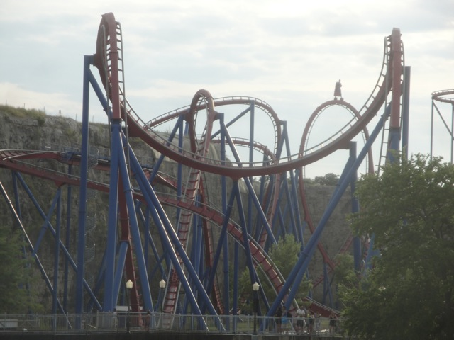
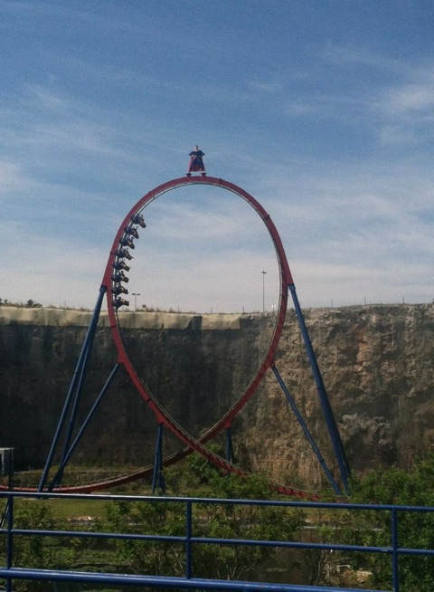
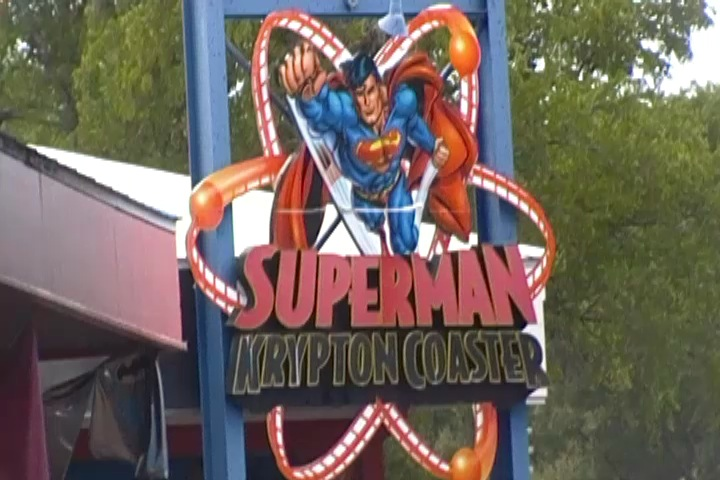
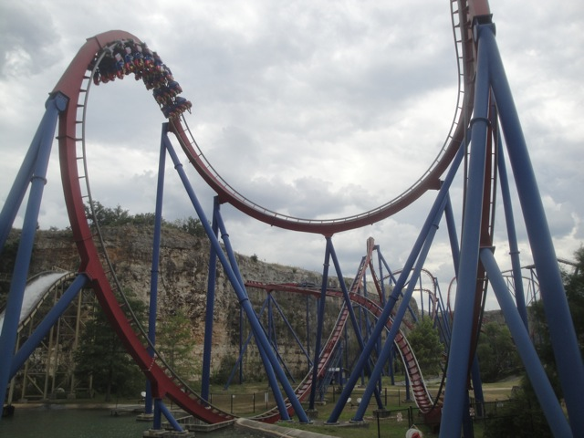
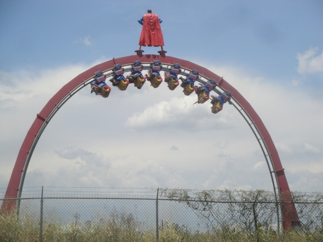
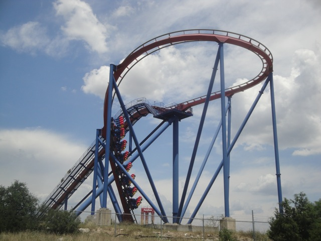
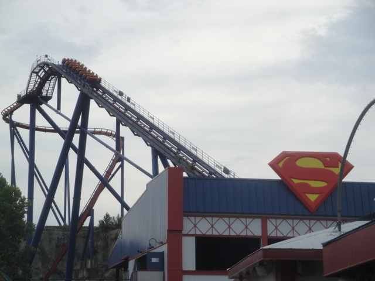

| |
Superman Krypton Coaster Review

We're here at Six Flags Fiesta Texas. Today's ride we'll be reviewing for you is Superman Krypton Coaster. Take a look at the pretty flowers outside the station, see the big quarry wall in front of you, wave goodbye to the floor, and away we go. We head around the typical B&M Prelift, and begin to climb the lifthill. And if you thought the quarry was big, the lifthill goes right above it and pierces the sky. So yeah, all this time, we're getting a great view of Six Flags Fiesta Texas as we climb the lifthill. Eventually, we reach the top of the lifthill, where we get a nice view of a random shopping center at the top of the quarry (Fun fact. We went up there and got some nice offride shots of Superman Krypton Coaster). We head off the lifthill, go around a nice turn, wave hello to all the shallow shoppers, and then we head down the first drop. We're not just diving towards the ground, we're flat out diving off the freaking quarry. So yeah. That is totally cool. I love this first drop. Easily my favorite first drop on a B&M Floorless Coaster. Hell, it might very well be my favorite B&M first drop (excluding the Hyper Coasters & Dive Coasters). We then soar up into a giant loop. And I mean a GIANT loop. Easily one of the biggest loops out there (certainly the biggest B&M loop). And we just soar on up into it with no problems. Cause yeah. This is a very fast ride. We get some hangtime in the loop, and then we dive on back down, gaining back most of the speed we had before. And we certainly are flying. We then rise up a bigass hill, reaching the top of the quarry. We then head around a low to the ground turn at the very top of the quarry before diving on off and jumping back down to the lower level and gaining all of our speed back. God, I just love the way that this ride interacts with its enviroment. This is not a coaster that is meant to be relocated anywhere else. Yeah, you technically could and it'd still be fun, but this coaster is meant for this park and this landscape. We then head into a Heartline Spin. It's not the best heartline spin ever. It's very big and kind of floaty, but screw it!! It's a lot of fun. And it's not like Silver Bullet where there's no whip. There's still plenty of whip to this heartline spin. And then we head into the Cobra Roll. And...HOLY SH*T!!! We're all the way on the other side of the park by the shoot the chutes ride. Did I mention that this ride is EXTREMELY spacious? Cause yeah. It's extremely spacious. Anyways, we head up into the cobra roll. It's pretty good. Rise up, twist on out of it. Twist upsidedown again, and rush straight towards the ground. We then head up another large curved hill, quick little direction change for some laterals as well as another fly by with the quarry wall. Wee, I always really love that. And then we glide straight into the midcourse brakes. We then head down a small, but powerful drop to the ground that actually provides us with some sharp laterals. I love the little touches on rides like this. We then head through some straight track, because again, it's very spacious. And then we head into corkscrew #1. It's pretty strong and we just tumble on through it without any second thoughts. We then head around a small banked curve that is just a lot of fun, dip back down, and head into corkscrew #2. Oh, and did I mention that these are interlocking corkscrews. Because yeah. It's just a ton of fun. And again, we just tumble straight on out of there. We then head around another banked turn that again, it's not intense, but it's just a lot of fun. We then rise up a small hill. It gives us with a nice pop of airtime. That's the good news. The bad news is that this is the end of the ride and we glide straight into the brake run. Aww. Lame. =( But dissapointment aside, this ride is freaking amazing. It's easily one of my favorite B&M coasters. While I will admit that Dominator is still my favorite floorless coaster, Superman Krypton Coaster is a close second. And there's no secret why. It's big, it's fast, it's spacious, it's agressive, and it's just absolutely beautiful in every single way. I just love the way it interacts with the quarry. Now some may not be able to see that thanks to the Virtual Reality technology that's coming to the ride. I'm not sure how that'll be, but it's optional. So you'll still get a chance to ride it as it was intended to be enjoyed. Just make sure you ride it whenever you visit Six Flags Fiesta Texas. It really is an amazing ride.
8/10
Location: Six Flags Fiesta Texas
Opened: 2000
Built by: B&M
Last Ridden: July 14, 2013
Superman Krypton Coaster Photos






Home
|